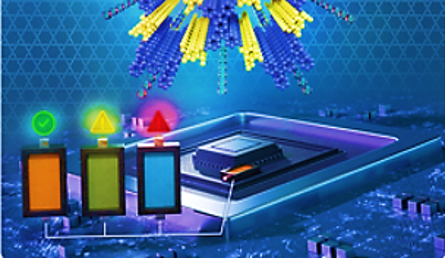

Subham Das is a Mechanical Engineering Ph.D. candidate (expected April 2028) and Graduate Research Assistant in the Multiphysics Vibrations Lab at Purdue University, West Lafayette. His research focuses on nanoscale mechanics, metrology, and biophysical/analytical characterization of nanoparticle drug-delivery systems — AFM force spectroscopy, s-SNOM/nano-FTIR chemical mapping, and Python image-analysis pipelines — and supports the Lilly Purdue Innovation Institute (LPII) Genetic Medicine program. With 4+ years of healthcare R&D across academia–industry teams, from assistive devices developed with clinicians to measurement science, he has authored 13 peer-reviewed journal articles (8 first/co-first author) and 8 patent applications, with 140+ citations, and mentors undergraduate researchers.
Curriculum Vitae
Click on the image to view my detailed CV.
Projects
Click on the image to see my projects.

- Nanomechanics & metrology
- Nanoscale chemical imaging
- Material characterization
- Bioinstrumentation
Graduate Research Assistant, Supervised by Dr. Ryan Wagner (School of Mechanical Engineering) | Lilly Purdue Innovation Institute (LPII) Genetic Medicine program; research supported by Eli Lilly and Company
- Developed and validated an AFM force-spectroscopy protocol that quantifies nanoparticle deformability as a batch-consistency attribute; adopted by the LPII Genetic Medicine program for experimental formulations. Screened 7 substrate/environment preparations to set measurement conditions, demonstrated reproducibility across independent preparations, and validated fast force mapping at 120× the ramp rate of standard force mapping with no change in measured modulus.
- Quantified the shape and effective modulus of Doxil-like liposomal doxorubicin nanoparticles using JKR contact-mechanics fitting with Monte Carlo uncertainty analysis: showed particle integrity is hydration-dependent (27 ± 6 nm in PBS vs. 3 ± 1 nm in air) and that calibration uncertainty exceeds particle-to-particle variation, which the protocol removes from batch comparisons by same-probe, side-by-side measurement (first-author paper, Langmuir 2026; oral presentation, MRS Spring Meeting 2026).
- Built a Python image-analysis pipeline (NumPy/SciPy/scikit-image) to quantify the surface chemistry of drug-delivery nanoparticles from attocube s-SNOM/nano-FTIR chemical maps, supporting formulation development; selected the analysis method by empirical false-positive rate (≈20× fewer false detections than alternatives) and automated batch processing of >180 datasets.
Junior Research Fellow, Supervised by Dr. Mitradip Bhattacharjee (Dept. of EECS)
- Developed a microfluidic sensing platform with integrated biological-signal processing, achieving >90% biomarker-detection accuracy validated on 50 subjects; designed and optimized flexible sensors for multimodal sensing in assistive healthcare, leading to multiple publications and patent applications.
Product Design and Development Intern
- Designed and prototyped 4 patent-pending assistive healthcare devices (flexible health bands, wearable therapeutic devices) through iterative user-centered testing; in an evaluation by a panel of 10 clinicians, >80% rated the devices an improvement over existing methods.
- Integrated real-time physiological monitoring into flexible wearable platforms through iterative clinician feedback, enabling continuous data capture and reducing manual assessment time by 50%.
Supervised by Dr. Mitradip Bhattacharjee (Dept. of EECS)
- Developed a coupled tactile–temperature sensing glove for terrain identification from surface pressure profiles and radiated heat, achieving 90% classification accuracy; published as first author in IEEE Sensors Journal (2025), with the pressure-sensor design filed as a patent application.
Supervised by Dr. George Knopf (Dept. of Mechanical and Materials Engineering) | MITACS Globalink Research Internship
- Fabricated a chip-less, RLC-based readout system (13.56 MHz RFID) for a multi-purpose printable electronic sensor circuit, demonstrating feasibility for low-cost health monitoring.
Supervised by Dr. Mitradip Bhattacharjee (Dept. of EECS)
- Developed a smartphone application and custom-designed PCB providing four diagnostics (heart rate, oxygen saturation, blood pressure, temperature) and screening for arrhythmia and anemia with 90% preliminary accuracy using image processing; anemia work published in IEEE Sensors Letters (2022).
Supervised by Dr. Areejit Samal (Dept. of Computational Biology) | Indian Academy of Sciences Summer Research Fellowship
- Developed an NLTK-based database compiling information on 750+ synthetic logic gates reported to date.
Ph.D., Mechanical Engineering (Multiphysics Vibrations Lab), GPA: 3.65/4
BS-MS, Electrical Engineering & Computer Science (Minor: Biological Sciences), GPA: 9.46/10
Journal Article(s)
- S. Das, R. Wagner, "Complex Deformation Characteristics of Liposomes during Atomic Force Microscopy Force Curves", Langmuir, 42(17), 11605–11616 (2026) (doi:10.1021/acs.langmuir.5c05071)
- S. Das, K. Thiyagarajan, S. Kodagoda, A. Krishnan, M. Bhattacharjee, "A Novel Tactile Sensing Skin for Surface Perception", IEEE Sensors Journal (2025) (doi:10.1109/JSEN.2025.3565586)
- S. Das, A. Shrivas, P. Soni, A. Gupta, S. Singh, M. Bhattacharjee, "Quantitative Image Sensing of Tuberculosis Biomarkers Using Rapid Diagnostic Test Kit", IEEE Sensors Journal (2025) (doi:10.1109/JSEN.2024.3523750)
- H. Gadalla, Z. Yuan, Z. Chen, F. Alsuwayyid, S. Das, H. Mitra, A. Ardekani, R. Wagner, Y. Yeo, "Effects of nanoparticle deformability on multiscale biotransport", Advanced Drug Delivery Reviews (2024) (doi:10.1016/j.addr.2024.115445)
- T. Dutta, S. Das, M. Sarkar, M. Bhattacharjee, A. Patra, "Multistate Electrochromic Covalent Organic Framework Film for Electronic Safety Indicator", Chemistry of Materials (2024) (doi:10.1021/acs.chemmater.4c00399)
- A. Siddiqui, S. Das, M. Bhattacharjee, "Nanofillers Embedded Flexible Piezoelectric Polymer Sensor Pad for Robotic and Human Finger Tap Analysis", Sensors and Actuators A: Physical (2024) (doi:10.1016/j.sna.2024.115503)
- C. Das, S. Das, V. Chugh, M. Bhattacharjee, "Smart 3D Printed Design Assisted Multi-layered GO-modified Polymer Glucose Sensor", Advanced Engineering Materials (2024) (doi:10.1002/adem.202301067)
- S. Das#, V. Chugh#, C. Das, M. Bhattacharjee, "Non-enzymatic Glucose Sensing Employing a Patterned Substrate Miniaturized Device-on-Mask", IEEE Sensors Letters (2023) (doi:10.1109/LSENS.2023.3307089)
- S. Das, M. Bhattacharjee, K. Thiyagarajan, S. Kodagoda, "Conformable Packaging of a Pressure Sensor for Tactile Perception", Flexible and Printed Electronics (2023) (doi:10.1088/2058-8585/aced15)
- S. Das, M. Bhattacharjee, "Nonlinear Response Analysis of a Polymer-based Piezoresistive Flexible Tactile Sensor at Low-Pressure", IEEE Sensors Letters (2023) (doi:10.1109/LSENS.2023.3320986)
- A. Siddiqui, S. Das, M. Bhattacharjee, "Acoustic Sensing Response in Human Tissues for Theranostics and Implants", IEEE Sensors Letters (2023) (doi:10.1109/LSENS.2023.3251991)
- S. Das#, A. Krishnan#, M. Bhattacharjee, "Flexible Piezoresistive Pressure and Temperature Sensor Module for Continuous Monitoring of Cardiac Health", IEEE Journal on Flexible Electronics (2023) (doi:10.1109/JFLEX.2023.3243877)
- S. Das, M. Bhattacharjee, "Image-based Sensing of Leukonychia for Early Diagnosis of Anemia using a Smartphone Application", IEEE Sensors Letters (2022) (doi:10.1109/LSENS.2022.3217010)
Conference Presentation(s)
- S. Das, R. Wagner, "Complex Deformation Characteristics of Liposomes during Atomic Force Microscopy Force Curves", Materials Research Society Spring Meeting, Hawaii, USA, April 2026 - Oral Presentation.
- S. Das#, V. Chugh#, C. Das, M. Bhattacharjee, "Non-enzymatic Glucose Sensing Employing a Patterned Substrate Miniaturized Device-on-Mask", IEEE Sensors Conference, Vienna, Austria, October 2023 - Oral Presentation.
- A. Siddiqui, S. Das, M. Bhattacharjee, "Acoustic Power Distribution Analysis in Different Human Tissues for Bioimplant Application", IEEE International Students' Conference on Electrical, Electronics and Computer Sciences (SCEECS), Bhopal, India, February 2023 (doi:10.1109/SCEECS57921.2023.10062978) - Oral Presentation.
- M. Bhattacharjee, S. Das, A. Krishnan, "Multi-sensor monitoring system", (Application Number: 202421022245), 2024.
- M. Bhattacharjee, S. Das, L. Singh, "Micro/nanostructured flexible multilayered sensors", (Application Number: 202421033902), 2024.
- M. Bhattacharjee, C. Das, S. Das, V. Chugh, "Substrateless device", (Application Number: 202421018569), 2024.
- M. Bhattacharjee, S. Das, "A detection system based on colorimetric analysis", (Application Number: 202421008300), 2024.
- A. Patra, M. Bhattacharjee, T. Kumar Dutta, S. Das, "A smart electronic safety system", (Application Number: 202421031809), 2024.
- A. Patra, M. Bhattacharjee, M. Sarkar, A. Krishnan, S. Das, "A self-sustainable photoelectric converter for electrochromic system", (Application Number: 202421047377), 2024.
- M. Bhattacharjee, A. Siddiqui, S. Das, A. Kumar, "A multi-organ theranostic body wearable device", (Application Number: 202421006385), 2023.
- M. Bhattacharjee, S. Das, "Image sensing assisted health monitoring system and method thereof", (Application Number: 202421030501), 2023.
SKILLS
Nanoscale & Biophysical Characterization
Atomic force microscopy — force spectroscopy, fast force mapping, nanomechanics, tapping-mode topography (Asylum Research Cypher S/ES, MFP-3D); contact-mechanics modeling (JKR/DMT/Hertz); s-SNOM / nano-FTIR chemical mapping (attocube); FTIR spectroscopy; electrochemical and electrical impedance spectroscopy (ECIS/EIS); dynamic light scattering (DLS); nanoparticle characterization (lipid nanoparticles/liposomes, silica, nanocrystals)
Programming & Data Analysis
Python (NumPy, SciPy, scikit-image), MATLAB, C; digital image processing; statistical modeling and analysis; Monte Carlo uncertainty quantification; AI-assisted analysis and automation tools (Claude Code)
Engineering & Prototyping
SolidWorks, ABAQUS, Ansys HFSS, NI Multisim, Blender; sensor and circuit design–fabrication–integration; flexible/wearable sensors; microfluidic device fabrication; FDM and SLA 3D printing
Languages
English (IELTS 7.5 | W=7.5, R=8 L=7.5 S=7), Hindi (fluent), Odiya (fluent), French (basic), Arabic (basic)
AWARDS / CO-CURRICULAR / Teaching
- Formerly the Lilly–Purdue Research Collaboration (LPRC). Initiated and coordinated Lilly–Purdue engagement and professional-development events for program researchers and undergraduates: 5+ events per semester with >50 attendees each.
- Evaluated submitted manuscripts for quality, significance, and publication suitability in peer-reviewed journals and conferences.
- 2025-2026: Elsevier Measurement (Journal)
- 2024: IEEE Transactions on Industrial Electronics (Journal)
- 2024: IOP Flexible and Printed Electronics (Journal)
- 2024: IEEE Sensors Letters (Journal)
- 2022-2023: IEEE Applied Sensing Conference
- Selected for the 2022 MITACS Globalink Research Internship, a competitive international research award; hosted at the University of Western Ontario, Canada.
- Selected for the 2021 IAS Summer Research Fellowship, a national merit-based research fellowship; hosted at IMSc Chennai.
- Managed four council clubs, coordinated year-round events and fests, and contributed to institutional decision-making discussions.
- Participated in the KVPY-IISc Inspire National Science Camp at IISER Bhopal.
- Achieved Zonal Rank '2' (Silver Medal) in the 19th SOF National Science Olympiad.
Teaching and Mentoring
Purdue University
- Spring 2024 - Spring 2025: Mentored 5 undergraduate researchers (2 VIP teams and 3 ME 498/499 independent-study students) on microfluidic drug-transport models and AFM characterization, resulting in 1 poster and 3 presentations at the Purdue Undergraduate Research Conference.
- Summer 2024: Designed and delivered a week-long SolidWorks 3D-modelling and 3D-printing (Creality Ender 3) workshop for 20 pre-college students; 100% completed a functional prototype.
- Fall 2024, Fall 2025: Performed AFM demonstrations at the Lafayette (IN) Manufacturing Expo, showcasing nanoscale metrology and regional industry impact to local schools.
Indian Institute of Science Education and Research Bhopal
- Spring 2023: Teaching assistant for ECS 413/613 Smart Sensing Technologies.